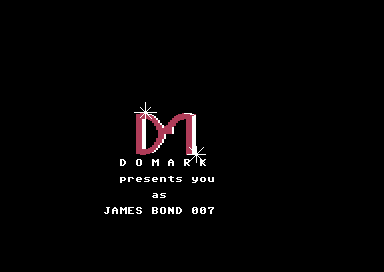
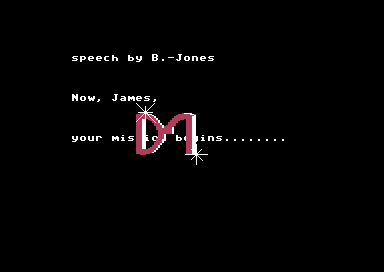
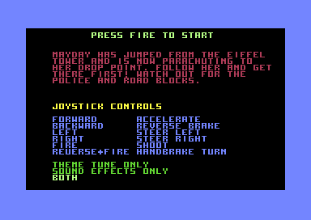
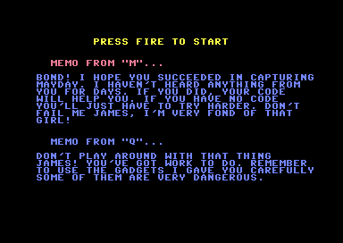
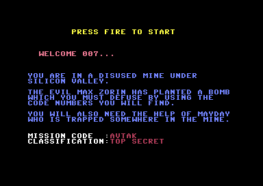
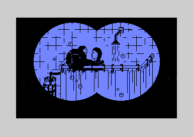
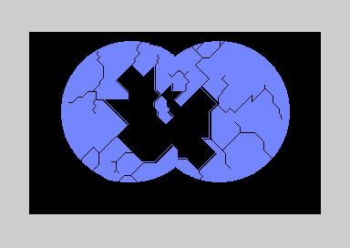

<meta charset="utf-8">
<meta name="viewport" content="width=device-width, initial-scale=1">
<title>{{title}}</title>
<link rel="preconnect" href="https://fonts.googleapis.com">
<link rel="stylesheet" href="https://fonts.googleapis.com/css2?family=Lato:wght@400;700;900&family=IBM+Plex+Mono:wght@400;500&display=swap">
<link rel="stylesheet" href="reference/avtak-page.css">
<!-- tabs -->
<header class="hero">
  <p class="eyebrow">{{platform}} · {{year}} · {{publisher}}</p>
  <h1>{{title}}</h1>
  <p class="sub">The five programs in the order they are loaded: the intro, the three sections you play, and the ending. Every address here is in that program's own memory.</p>
</header>
<main class="wrap">
<section id="intro" data-part="intro">
  <p class="fig">01 · The intro</p>
  <h2 class="t">A gun barrel, a gunshot, a spoken line and the credits, all driven from one interrupt</h2>
  <p class="lede">The intro plays by itself for about 100 seconds and then waits. Nothing in it reads the joystick or loads the next program.</p>
  <div class="shots">
    <figure><figcaption>The Domark logo, put together from six sprites.</figcaption></figure>
    <figure><figcaption>The end of the credits, where the intro stops.</figcaption></figure>
  </div>
  <h3>The running order</h3>
  <p>A raster interrupt runs one of three modes, music only, the gun barrel or the credits, and every mode ends by stepping the tune (<code>$CC00</code>). The main program steps through the scenes:</p>
  <table class="t">
    <tr><th class="n">Seconds</th><th>What</th></tr>
    <tr><td class="n">0.3</td><td>two white dots, the films' opening spotlights, roll across the screen (<code>$C000</code>)</td></tr>
    <tr><td class="n">4.5</td><td>the gun barrel is wiped in from the right, then scrolls left as Bond walks in (<code>$C100</code>, <code>$C809</code>)</td></tr>
    <tr><td class="n">11.0</td><td>the gunshot, and blood runs down the screen (<code>$CABC</code>, <code>$C840</code>)</td></tr>
    <tr><td class="n">15.6</td><td>the screen shakes (<code>$C900</code>)</td></tr>
    <tr><td class="n">21.1</td><td>the speech (<code>$A000</code>)</td></tr>
    <tr><td class="n">23.3</td><td>the picture dissolves (<code>$CA80</code>)</td></tr>
    <tr><td class="n">24.3</td><td>the Domark logo flies together (<code>$C430</code>)</td></tr>
    <tr><td class="n">29.7</td><td>D O M A R K presents you as JAMES BOND 007 (<code>$90A0</code>)</td></tr>
    <tr><td class="n">37.0</td><td>the credits scroll, a new line every 0.8 s (<code>$C54E</code>)</td></tr>
    <tr><td class="n">103</td><td>the music stops and the logo sparkles for good (<code>$C476</code>)</td></tr>
  </table>
  <p>The times are frames of a run in a simulator at 50 a second, so a real machine takes a little longer. The barrel scrolls a pixel every two frames across two screen banks, the picture moving two character cells each time the banks swap (<code>$CD00</code>, <code>$C170</code>). The blood is the barrel's picture changed a line at a time, turning white pixels red (<code>$C840</code>).</p>
  <p>The <a href="https://frgcb.blogspot.com/2023/04/james-bond-007-view-to-kill-domark-1985.html">FRGCB blog</a> compares the versions and finds that only the Commodore 64 plays the whole gun-barrel sequence, "from the beginning, with the smaller white spotlights and all, and Bond walking from the right side of the screen and turning towards the camera before shooting".</p>
  <h3>Bug: on some boots the credits never scroll</h3>
  <p>Before the credits, the intro asks for its next interrupt on a raster line the screen never reaches, and relies on a later write to put it right. That write copies back whatever line the beam is on, so if the beam is low on the screen at that moment the mistake stays, and the credits and the music stop for good. In the emulator, one boot in four did it. The <a href="discoveries.html#intro">Discoveries</a> tab has the detail.</p>
</section>

<section id="paris" data-part="paris">
  <p class="fig">02 · Paris</p>
  <h2 class="t">Catch May Day once her altimeter reads below 60, before the damage reaches 40</h2>
  <p class="lede">May Day circles down over Paris and lands at one of eight points. The car has to touch her once she is low enough.</p>
  <div class="shots">
    <figure><figcaption>The instruction page. Up and down choose music, effects or both.</figcaption></figure>
    <figure><figcaption>In play: the view ahead, the cockpit with the altimeter and the map.</figcaption></figure>
  </div>
  <h3>May Day</h3>
  <p>She starts high above the map and circles outward until her circle reaches a limit, then heads for one of eight landing points, picked with the sound chip's noise generator as a random number (<code>$5200</code>, <code>$4F00</code>). The altimeter starts at 900 and drops one for every 20 of her steps (<code>$5315</code>). Below 060 a catch becomes possible: the car's sprite has to touch hers (<code>$5142</code>). At 000 the chase is lost. A lamp in the cockpit flashes faster the closer she is, at an interval set by the distance to her in x plus y (<code>$4850</code>, <code>$4A50</code>).</p>
  <h3>The car</h3>
  <p>Speed is a delay between steps, from 1, the fastest, to 63 (<code>$0340</code>). Pulling back past the slowest speed puts the car in reverse. Holding the stick to one side turns to the next of eight headings and stops there. Fire shoots, and fire in reverse at speed is a handbrake turn of four steps (<code>$5B9B</code>). Hitting a wall or an unshot police car bounces the car back, slows it and adds one to the damage (<code>$51A2</code>). At 40 the chase is lost (<code>$49A0</code>).</p>
  <h3>Secret: the police follow the route you drove</h3>
  <p>Fourteen police cars share three sprites. A police car on a junction takes its heading from the junction's map cell (<code>$4C9D</code>). When the player's car leaves a junction, the game writes the way it went into that cell (<code>$4E80</code>). So the police turn wherever the player turned, and trail behind along the same streets.</p>
  <p>Every other cell the player leaves adds one to a pursuit counter (<code>$4EA0</code>). At 20 a roadblock appears at one of 32 places and the counter drops back to 18 (<code>$4900</code>), so after the first there is a new roadblock every couple of cells. Driving into one clears it and costs one point of damage (<code>$4940</code>).</p>
  <h3>The end</h3>
  <p>A catch types out a telex whose code for City Hall is written into the program as text, CCPHJ (<code>$8140</code>). Losing goes back to the instruction page with a spoken comment. There is no score.</p>
  <p><a href="maps.html#paris">The town map, with May Day's eight landing points →</a></p>
</section>

<section id="city-hall" data-part="city-hall">
  <p class="fig">03 · City Hall</p>
  <h2 class="t">A 75-room building where the clock and the energy gauges never kill you</h2>
  <p class="lede">Bond walks through City Hall one room at a time, carrying objects and using them from a menu, to reach Stacey and take her out through a door that opens only at the end.</p>
  <div class="shots">
    <figure><figcaption>The memos from M and Q before the section.</figcaption></figure>
    <figure><figcaption>A room, the gauges, and the building in miniature with its lit windows.</figcaption></figure>
  </div>
  <h3>The building</h3>
  <p>Five floors of 15 rooms, 14 bytes each (<code>$4222</code>). A room's bytes say which doorways it has and whether Bond can pass, which furniture stands in it, whether it is burning, and its temperature from 0 to 15. Lifts move 15 rooms, one floor, at a time (<code>$6C60</code>). The miniature building under the room lights the windows of the burning rooms.</p>
  <h3>Objects and words</h3>
  <p>Fire opens a strip of three item icons that scrolls, then a list of words: RETURN, DROP, SEARCH, USE, FOLLOW, STAY, GIVE, ABORT (<code>$7A00</code>, <code>$8000</code>). There are 91 objects, each with a room, a weight and a use (<code>$63D0</code>); the load Bond can carry is limited by weight (<code>$7D6A</code>). USE picks one of 24 handlers (<code>$7CA6</code>). Buckets are filled at a tap and thrown to hold a room's fire back; keys open doors between given rooms; a tool forces doors and uses something up each time; some objects restore energy, and others turn into ones that do in two particular rooms. Stacey follows only after one particular object is used in one particular room (<code>$7F00</code>). Six kit pieces, found one by one, build up the object that opens the last doorway (<code>$8356</code>).</p>
  <h3>The clock and the gauges are for show</h3>
  <p>The fire spreads once every 14 × 256 frames, about 72 seconds, and a room catches when its temperature reaches 15 (<code>$94F0</code>). Bond's and Stacey's energy figures shrink by a row every 4 × 256 frames (<code>$8900</code>), and the clock counts up from 10:00:00 (<code>$6E40</code>). Neither gauge nor clock ends the game: nothing acts on an empty gauge, and nothing reads the clock at all. Only the fire does, as the next part says.</p>
  <h3>Bug: a burning room ends the section through the middle of an instruction</h3>
  <p>The main loop checks whether Bond's room is burning (<code>$7069</code>). If it is, a branch lands in the middle of another instruction, at <code>$7090</code>, and the processor runs three bytes as instructions they were never meant to be, one of them undocumented, before reaching the end test's check of the code. With CCPHJ typed at the start, that shows the mission-complete screen and the next code; without it, a new game starts. Both were seen in the emulator by setting Bond's room on fire.</p>
  <h3>The end</h3>
  <p>The intended end is room 76, past the last doorway, with Stacey following (<code>$708A</code>). With the code typed, the section shows CONGRATULATIONS 007 and the code for the mine, DB4CT, fixed text at <code>$1334</code>. Without it, the game simply starts again.</p>
  <p><a href="maps.html#city-hall">The map of the building, when each room catches fire, and two ways to finish →</a></p>
</section>

<section id="mine" data-part="mine">
  <p class="fig">04 · The mine</p>
  <h2 class="t">Five digits, one key and one column: how the bomb is defused</h2>
  <p class="lede">A cave 150 tiles wide and 100 deep scrolls around Bond, who stays in the middle of the screen. The clock counts down from 90 minutes.</p>
  <div class="shots">
    <figure><figcaption>The briefing.</figcaption></figure>
    <figure><figcaption>In play: the panel's clock, the meter and the item strip.</figcaption></figure>
  </div>
  <h3>Moving</h3>
  <p>Bond walks, jumps, falls and climbs (<code>$2700</code>). A long fall hurts him, and so does touching a lit hazard. Every hurt costs the clock about 29 seconds: for 30 passes the clock runs 48 extra ticks each (<code>$2B2C</code>). There are no lives. Conveyor belts carry him, and a lever turns them round (<code>$1900</code>, <code>$3A0D</code>). A lift is called with GET LIFT and ridden with the stick (<code>$3A95</code>).</p>
  <h3>May Day and the winch</h3>
  <p>Explosive placed near a rock fall marks it, and the detonator clears it with a shake of the screen (<code>$3827</code>, <code>$39E0</code>). Blasting the right rock fall frees May Day (<code>$3E00</code>). The winch takes four parts, and WINCH DOWN works only once May Day is free and Bond stands in the right place (<code>$3F23</code>).</p>
  <h3>The bomb</h3>
  <p>Numbered objects enter digits, 1 to 7, when used in the right part of the mine (<code>$389C</code>). With five digits entered and the winch complete, Bond can take the key (<code>$375B</code>). Carried to one column of the map, it runs the end test (<code>$25E0</code>): the digits must be 6, 7, 1, 3, 4 (<code>$26F0</code>) and the code DB4CT must have been typed. Then the screen shows the code for the ending, ILVCT. Otherwise the bomb goes off: four flashes, and the section starts again (<code>$25D0</code>). Both were seen in the emulator by setting the digits and running the test.</p>
  <table class="t">
    <tr><th>Digits</th><th>DB4CT typed</th><th>Result</th></tr>
    <tr><td>6 7 1 3 4</td><td>yes</td><td>CONGRATULATIONS 007, code ILVCT</td></tr>
    <tr><td>6 7 1 3 4</td><td>no</td><td>the bomb goes off</td></tr>
    <tr><td>anything else</td><td>either</td><td>the bomb goes off</td></tr>
  </table>
  <p>MI6-HQ gives the combination as 32768. The program checks 67134.</p>
  <p><a href="maps.html#mine">The map of the mine and the order to do things in →</a></p>
</section>

<section id="finale" data-part="finale">
  <p class="fig">05 · The ending</p>
  <h2 class="t">Three seconds of animation, and no score</h2>
  <p class="lede">The last program asks for the mine's code, ILVCT, and then plays a short scene over two pictures. It never loads anything else or prints a message.</p>
  <div class="shots">
    <figure><figcaption>The first picture: the shower, seen through binoculars.</figcaption></figure>
    <figure><figcaption>The second picture: the same lenses, cracked.</figcaption></figure>
  </div>
  <h3>What plays</h3>
  <p>The code prompt is the same routine as City Hall's and the mine's (<code>$804C</code>). Here RETURN without the code only asks again, so the ending cannot be seen without ILVCT. The scene itself is straight-line code (<code>$1000</code>): the shower picture in high resolution, then eight steps of sprites over it with a pause of about a third of a second after each. A man's head seen from behind turns to the left. A bar grows out of the small machine at the lower left, and a round object flies from the machine towards the head, growing to double size on the last step. Then the program switches to the cracked picture, turns the sprites off and stops (<code>$1186</code>).</p>
  <p>The scene is the film's last one. The <a href="https://frgcb.blogspot.com/2023/04/james-bond-007-view-to-kill-domark-1985.html">FRGCB blog</a> describes it as "viewed through the eyes (or cameras) of Q's remote-controlled security dog droid thing", which is why the pictures have the shape of two lenses.</p>
  <p>The whole scene lasts about 2.8 seconds. There is no sound, and no code or score is printed. RESTORE brings the prompt back, over the cracked picture, and typing ILVCT blind plays the scene again.</p>
</section>
</main>
